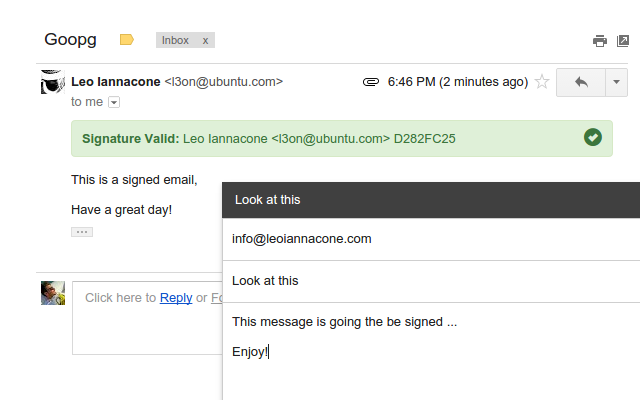

Goopg is an extension for the Chrome and the Chromium browser which enables GPG sign and verification in the GMail web page.
It uses the GMail APIs and a SMTP connection to read and send emails, in a completely transparent way.
The installation consists in two phases:
-
Install the Goopg extension from Chrome Web Store
-
Install the plugin using the following PPA:
sudo apt-add-repository ppa:team-goopg/goopg sudo apt-get update sudo apt-get install goopg-chromium
If you use Chrome, then installgoopg-chromeinstead.
Reload your GMail web page and enjoy the verification and the capability to sign the outgoing messages.

If you want this project to be maintained, please consider a donation